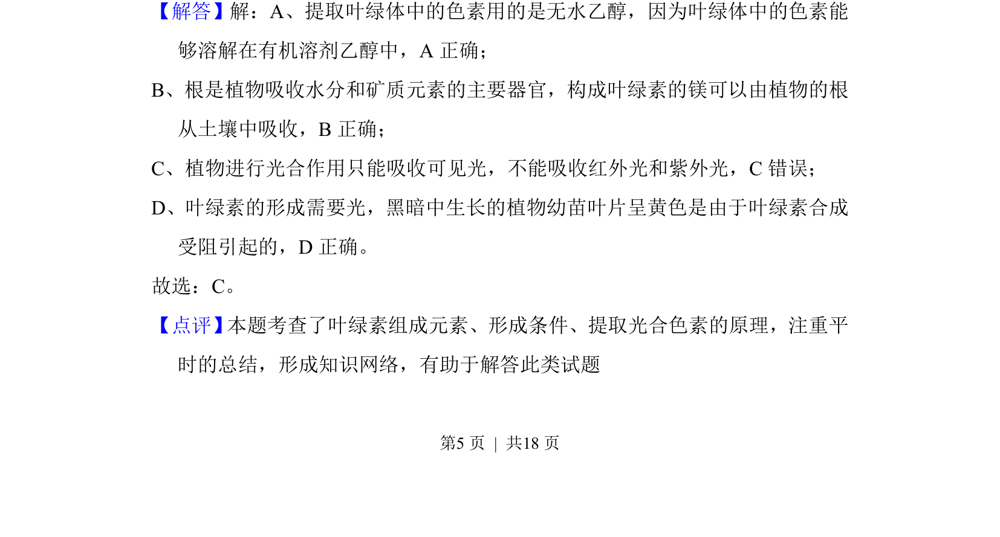

考点：叶绿体结构及色素的分布和作用 叶绿体色素的提取和分离实验
考查叶绿体色素的溶解性、镁元素吸收、光的吸收特性及叶绿素合成条件

📄 原 PDF 第 5 页：
素材/真题/吉林/2008-2024·（吉林）生物高考真题/2016年高考生物试卷（新课标Ⅱ）（解析卷）.pdf
4．（6分）关于高等植物叶绿体中色素的叙述，错误的是（ ） A．叶绿体中的色素能够溶解在有机溶剂乙醇中 B．构成叶绿素的镁可以由植物的根从土壤中吸收 C．通常，红外光和紫外光可被叶绿体中的色素吸收用于光合作用 D．黑暗中生长的植物幼苗叶片呈黄色是由于叶绿素合成受阻引起的
【考点】3H：叶绿体结构及色素的分布和作用；3I：叶绿体色素的提取和分离实 验．菁优网版权所有 【专题】41：正推法；51C：光合作用与细胞呼吸． 【分析】1、叶绿体中的色素能够溶解在有机溶剂乙醇、丙酮中； 2、镁是组成叶绿素的基本元素之一； 3、植物进行光合作用只能吸收可见光； 4、叶绿素的形成需要光。 【解答】解：A、提取叶绿体中的色素用的是无水乙醇，因为叶绿体中的色素能 够溶解在有机溶剂乙醇中，A正确； B、根是植物吸收水分和矿质元素的主要器官，构成叶绿素的镁可以由植物的根 从土壤中吸收，B正确； C、植物进行光合作用只能吸收可见光，不能吸收红外光和紫外光，C错误； D、叶绿素的形成需要光，黑暗中生长的植物幼苗叶片呈黄色是由于叶绿素合成 受阻引起的，D正确。 故选：C。 【点评】 本题考查了叶绿素组成元素、形成条件、提取光合色素的原理，注重平 时的总结，形成知识网络，有助于解答此类试题